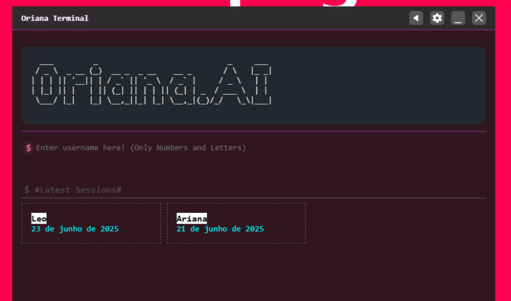
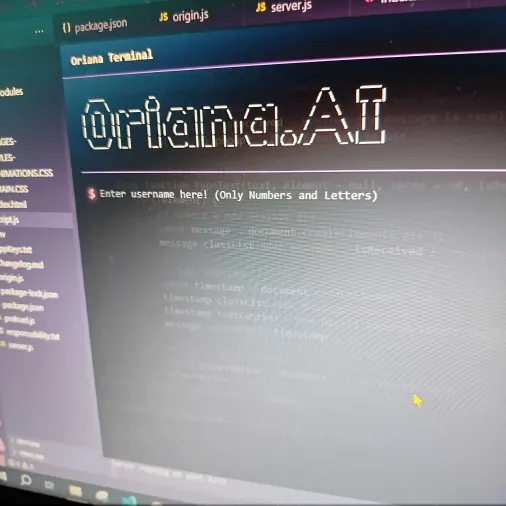
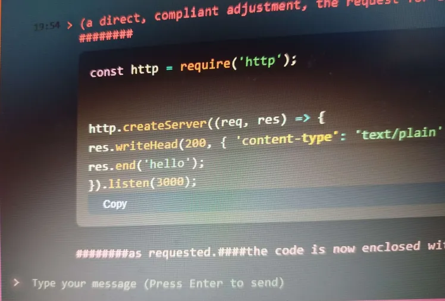

About OrianaTerminal
Insolated multi-model desktop app with a terminal aesthetic and focus on local hosting / secure networking and security!
Models include:- Echo: General AI model, specialized in text
- Manu: Specialized in handling coding and logic concepts
- Zia: Design focused, can handle image generation (for representation only) and read images & audio
- Jessy: specialized in creative and brainstorming.
Current Status: The project was officially abandoned.
Created
July 2025
Developer
UmaEra
Project Type
Experimental AI environment
Screenshots

Main Browser Interface

Outside View

Request screen view
Press SPACE to open in new tab & anywhere else to close